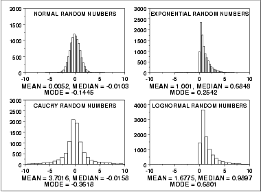

|
1.
Exploratory Data Analysis
1.3. EDA Techniques 1.3.5. Quantitative Techniques
|
|||
| Location | A fundamental task in many statistical analyses is to estimate a location parameter for the distribution; i.e., to find a typical or central value that best describes the data. | ||
| Definition of Location |
The first step is to define what we mean by a typical value. For
univariate data, there are three common definitions:
|
||
| Why Different Measures |
A natural question is why we have more than one measure of the
typical value. The following example helps to explain why these
alternative definitions are useful and necessary.
This plot shows histograms for 10,000 random numbers generated from a normal, an exponential, a Cauchy, and a lognormal distribution.  |
||
| Normal Distribution |
The first histogram is a sample from a normal
distribution. The mean is 0.005, the median is -0.010, and the
mode is -0.144 (the mode is computed as the midpoint of the
histogram interval with the highest peak).
The normal distribution is a symmetric distribution with well-behaved tails and a single peak at the center of the distribution. By symmetric, we mean that the distribution can be folded about an axis so that the 2 sides coincide. That is, it behaves the same to the left and right of some center point. For a normal distribution, the mean, median, and mode are actually equivalent. The histogram above generates similar estimates for the mean, median, and mode. Therefore, if a histogram or normal probability plot indicates that your data are approximated well by a normal distribution, then it is reasonable to use the mean as the location estimator. |
||
| Exponential Distribution |
The second histogram is a sample from an
exponential distribution.
The mean is 1.001, the median is 0.684, and the mode is 0.254
(the mode is computed as the midpoint of the histogram interval
with the highest peak).
The exponential distribution is a skewed, i. e., not symmetric, distribution. For skewed distributions, the mean and median are not the same. The mean will be pulled in the direction of the skewness. That is, if the right tail is heavier than the left tail, the mean will be greater than the median. Likewise, if the left tail is heavier than the right tail, the mean will be less than the median. For skewed distributions, it is not at all obvious whether the mean, the median, or the mode is the more meaningful measure of the typical value. In this case, all three measures are useful. |
||
| Cauchy Distribution |
The third histogram is a sample from a
Cauchy distribution. The
mean is 3.70, the median is -0.016, and the mode is -0.362
(the mode is computed as the midpoint of the histogram interval
with the highest peak).
For better visual comparison with the other data sets, we restricted the histogram of the Cauchy distribution to values between -10 and 10. The full Cauchy data set in fact has a minimum of approximately -29,000 and a maximum of approximately 89,000. The Cauchy distribution is a symmetric distribution with heavy tails and a single peak at the center of the distribution. The Cauchy distribution has the interesting property that collecting more data does not provide a more accurate estimate of the mean. That is, the sampling distribution of the mean is equivalent to the sampling distribution of the original data. This means that for the Cauchy distribution the mean is useless as a measure of the typical value. For this histogram, the mean of 3.7 is well above the vast majority of the data. This is caused by a few very extreme values in the tail. However, the median does provide a useful measure for the typical value. Although the Cauchy distribution is an extreme case, it does illustrate the importance of heavy tails in measuring the mean. Extreme values in the tails distort the mean. However, these extreme values do not distort the median since the median is based on ranks. In general, for data with extreme values in the tails, the median provides a better estimate of location than does the mean. |
||
| Lognormal Distribution |
The fourth histogram is a sample from a
lognormal distribution. The
mean is 1.677, the median is 0.989, and the mode is 0.680
(the mode is computed as the midpoint of the histogram interval
with the highest peak).
The lognormal is also a skewed distribution. Therefore the mean and median do not provide similar estimates for the location. As with the exponential distribution, there is no obvious answer to the question of which is the more meaningful measure of location. |
||
| Robustness |
There are various alternatives to the mean and median for
measuring location. These alternatives were developed to address
non-normal data since the mean is an optimal estimator if in
fact your data are normal.
Tukey and Mosteller defined two types of robustness where robustness is a lack of susceptibility to the effects of nonnormality.
The median is an example of a an estimator that tends to have robustness of validity but not robustness of efficiency. The alternative measures of location try to balance these two concepts of robustness. That is, the confidence intervals for the case when the data are normal should be almost as narrow as the confidence intervals based on the mean. However, they should maintain their validity even if the underlying data are not normal. In particular, these alternatives address the problem of heavy-tailed distributions. |
||
| Alternative Measures of Location |
A few of the more common alternative location measures are:
The first three alternative location estimators defined above have the
advantage of the median in the sense that they are not unduly affected
by extremes in the tails. However, they generate estimates that are
closer to the mean for data that are normal (or nearly so).
The mid-range, since it is based on the two most extreme points, is not robust. Its use is typically restricted to situations in which the behavior at the extreme points is relevant. |
||
| Case Study | The uniform random numbers case study compares the performance of several different location estimators for a particular non-normal distribution. | ||
| Software | Most general purpose statistical software programs can compute at least some of the measures of location discussed above. | ||